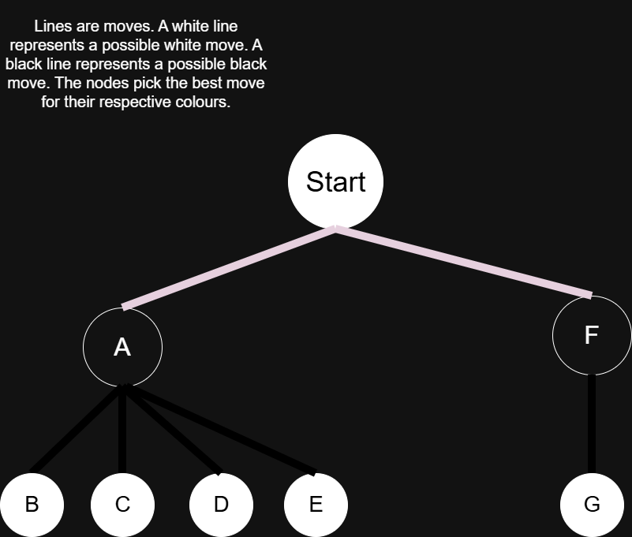
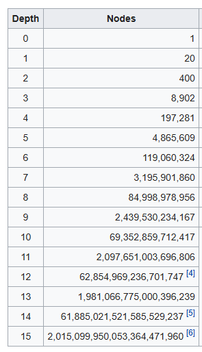
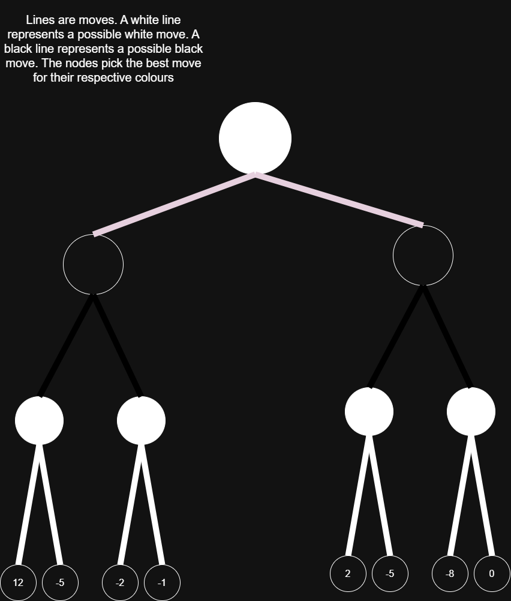
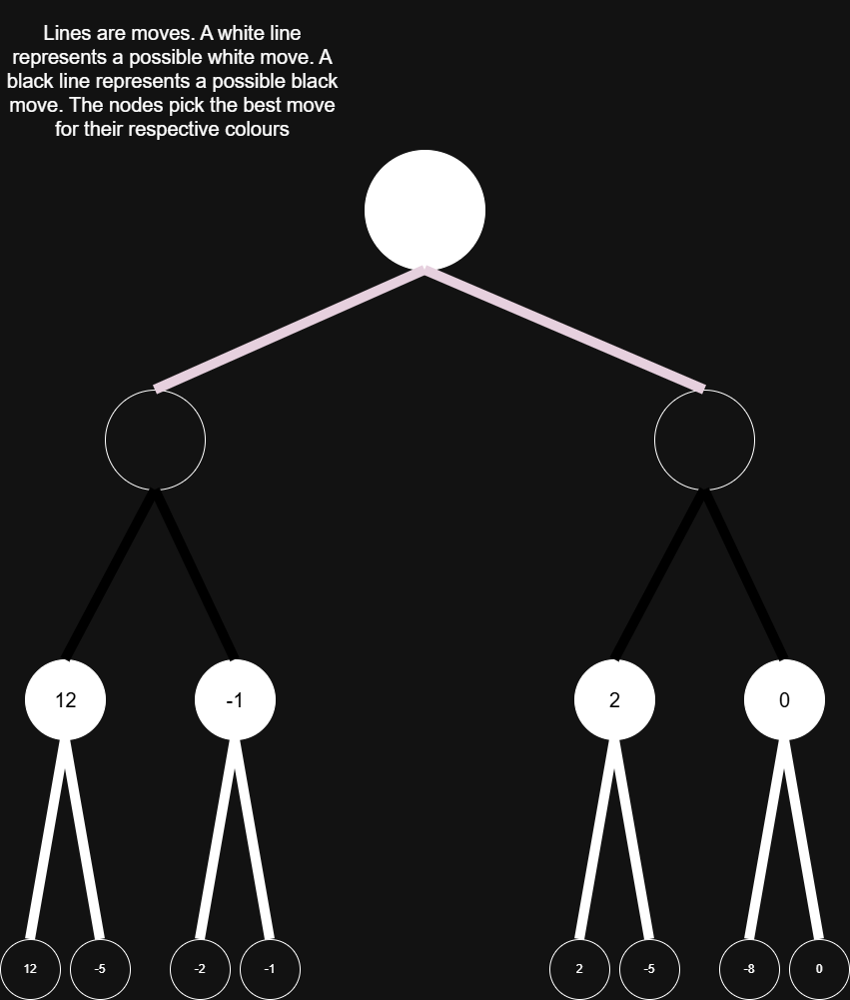
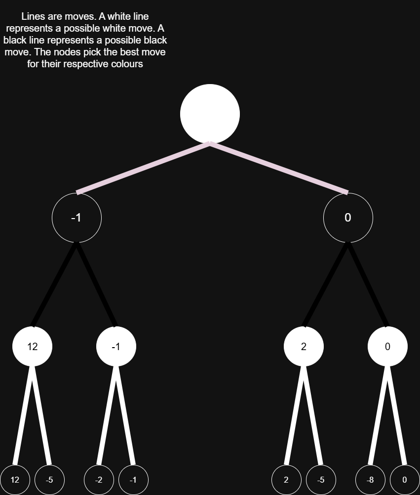
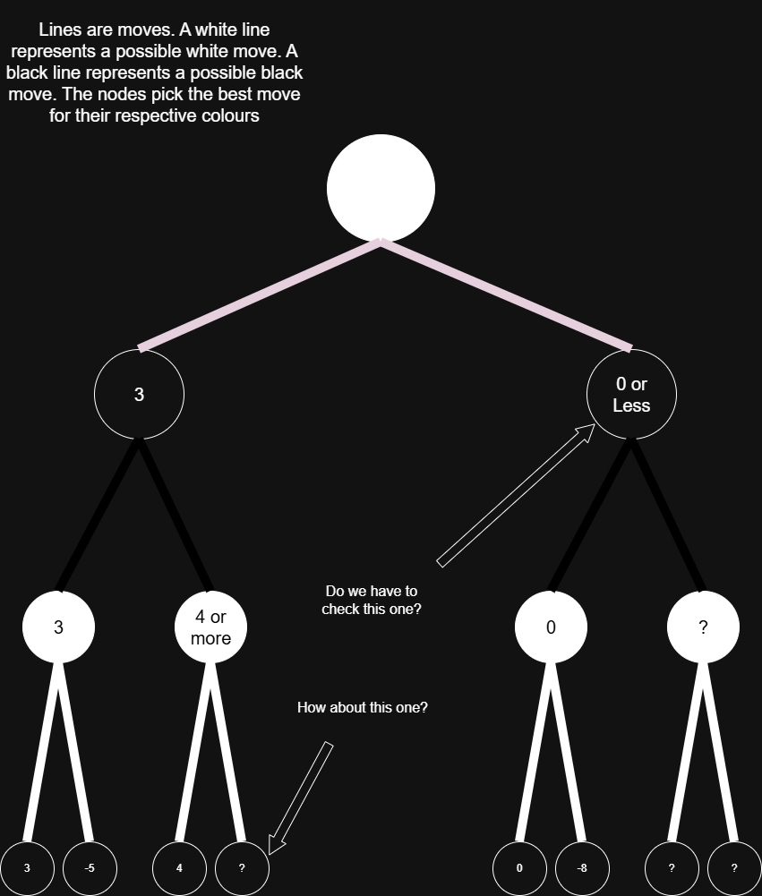

AI in general is one of the most interesting fields of computer science. Because of some math equations and variables, “intelligent”, or at least reasonable, behaviour can occur. AI can really just be thought of as a function, then. It receives an input, does something to it, and then returns an output. Therefore, any AI can be put into 3 parts: input, evaluation, and output. Chess AI receives the board position as input, evaluates the board through complex functions, and then outputs the best move. Board position is simple: it’s just where all the pieces are. The best move is also simple: what does the evaluation say the best move is? So, the real question is, how does the AI evaluate the input to get an output?
To understand how Chess AI evaluates, we first must understand how humans evaluate a Chess position. Humans evaluate a position by “looking ahead”. They would think: “If I do move A, my opponent will do B, C, D, or E. I see that if they respond with B, I’ll be able to checkmate them instantly. If they respond with C or D, I get to take their queen. Yet, if they respond with E, my position will be worse off. I believe that they’ll pick E if I pick A. I don’t want to do move A because my position is worse off (provided that they don’t blunder). So what if I pick a new move for myself, like move F? Their possible response is only G. G is checkmate. I’ll pick G.” This is illustrated in the diagram below. This diagram is known as a tree. The nodes or circles are possible positions, the lines to different positions are moves, the color of the line shows which side is moving. Also, the letters in the nodes are just the positions after a move that has the same letter as the letter in the node.
This long-winded explanation just shows that people evaluate positions by looking at future moves after a certain move. In this situation, the person only looked 2 moves ahead. In other situations, people can look a lot further. So, a Chess AI would evaluate a position by first picking a move and then looking at future responses to a particular depth or number of moves ahead (moves are one action by either side). Now the next question is, how do you know a position is good or not? Obviously, checkmating the opponent is good, and getting checkmated yourself is bad, but how about checks or captures? Capturing an opponent's piece is good. Losing one yourself is bad. Thus, the basis of an evaluation of one particular board state in Chess is material. The material value of a piece is based on how good it is. A pawn (the unit of measure) is 1, a knight is 3, a bishop is also 3 (some say 3.15), a rook is 5, a queen is 9, and a king is infinite. For a rudimentary evaluation, the best board position is the one in which I have the most material compared to my opponent. The equation for this evaluation is: \[ \text{White Material - Black Material} \] So White wants a more positive evaluation while Black wants a more negative one. This thinking does work, but there are many scenarios where higher material doesn’t mean an easier win. For example, let’s say the AI is playing White and I’m playing Black. The AI has all of its starting pieces but has developed nothing. I have all my starting pieces except for a pawn, but I have developed really well. Who is probably going to win? In most situations, I will win cause I control most of the board. So the AI should favor material and positional advantage. It should develop its pieces. The primary way positional advantage is favored is by looking at the position of any piece and then adjusting the material by a small amount, depending on the position. If I have a pawn that is one square away from promotion, it is more valuable than a pawn stuck on its starting square (in most situations), so I should favor positions where my pawn is close to promotion. If one of my knights has developed but my other one hasn’t, my more developed knight is more important. Therefore, I should favor my more developed knight. If my bishop is able to target more squares, it is more valuable, so it should be favored more than one that isn’t targeting more squares. In my engine, evaluation is just material and positional values. Some people add more, but these two factors already lead to a great engine, provided one more thing. Time complexity. You can have an engine look far ahead with no time optimizations, but that could literally take hours for one move at high depths. With some simple time optimization, an engine can look ahead more quickly without sacrificing accuracy in outputs. But before learning how time optimizations work, we first must learn how and why move generation time is so big at higher depths.
The main reason why Chess engines are extremely slow at higher depths is that evaluating moves gets exponentially harder. For example, at the start of a Chess game, White has 20 moves, and Black has 20 responses. At just 2 moves, there are already 400 positions. After looking deeper, the results are as follows:
For each move that is analyzed, the computer runs its evaluation function. Yet, exponential growth means that the number of board positions and thus evaluation costs is also exponential. This leads to an insane amount of computation. A computer can (obviously) compute a lot of numbers, but not even the fastest computers can work quickly at some high depths. With a more optimized algorithm, however, a home computer can rapidly increase its efficiency.
To understand this efficiency problem, we first need to formally analyze how Chess engines think. As explained earlier, a human looks ahead at moves and then decides if that move is good or not, depending on a certain response. An AI thinks in the same way, but with a bit less human randomness and a bit more robot rigidness. Let’s say the AI is White and its opponent is Black. So the AI favours positive evaluations while Black favours negative evaluations. So the AI wants to maximize, and Black wants to minimize, thus the term ‘Minimax’ makes sense. Since the best evaluation for any given player is based on future moves, future moves need to be evaluated first. To start, let’s say the AI will look 3 moves ahead. So White -> Black -> White -> Black. The diagram for this will be: The lines represent move choices. The numbers are evaluations.
  The best move for White in this position is the one that results in 0. If Black strays away from the specific sequence that White sees, Black will be worse off than staying on the sequence (at least in the AI’s eyes). Black and White will therefore follow the sequence for their own goal of winning. So the best move is a result of the worse sequence of moves for the opponent. I will not go into the code for this but I would recommend this video for pseudocode and more understanding https://www.youtube.com/watch?v=U4ogK0MIzqk.
Minimax has one problem, however. It’s inefficient. But with Alpha-Beta Pruning, we increase efficiency by not evaluating extraneous move orders. Also, pruning just means not evaluating a certain branch in a sequence of moves. For example, we can look at this:
For the ‘4 or more scenario’, we can prune the branches, because the branch with 4 in it will at minimum lead to 4, since White maximizes. Black minimizes, however, so we know that Black would force the move sequence that would lead to 3. For the ‘0 or less scenario,’ we can also prune the branches. White already has a guaranteed sequence that would lead to 3 (provided that Black played perfectly), but Black has a sequence that can lead to 0. White won’t want to continue on the possible-0 branch. White picks the 3 branch. The top node in the diagram above would then evaluate to 3. Also, the alpha and beta in Alpha-Beta pruning are just the current best values for each colour. Therefore, when we were evaluating the '4 or more' branch, we set beta to 3, because Black would never allow a position better than 3 for White. By that same logic, when we evaluated the '0 or less' branch, we saw that 0 was less than the current alpha of 3, so we pruned the rest of the branches. In addition, explaining the code of Alpha-Beta pruning is out of the scope of this article, but this great video here explains the pseudocode of it: https://www.youtube.com/watch?v=U4ogK0MIzqk
To maximize the effectiveness of alpha-beta pruning, move ordering is essential. Basically, when the computer analyzes the best moves first, it prunes branches quicker, cause it found a more restrictive alpha or beta. The best moves are probably checks, captures, promotions, or castling so those moves should be evaluated first compared to “quieter” moves. In my engine, I make the AI look at captures (my check, promotion, and castling systems really need to be fixed). If an earlier move is really good, it prunes a lot more branches compared to a bad early move.
There are a lot of things that need to be improved with my AI. First off, I use a dual system of legal and pseudolegal moves. Pseudolegal moves are basically all the possible moves that a piece can make, when it disregards checks and checkmate. Generating pseudolegal moves is a lot quicker, but some are illegal. I use a dual system because of time complexity. When I generate legal moves, I look at all the opponent responses, and if any capture the king, then I can’t do that move. So if the amount of moves is n, and the amount of enemy response is m it takes (time to generate one move) * n * m time to generate a legal move. This is time complexity: \[ O(n * m) \] Also, the AI can’t really checkmate in an open position (not many pieces left). I will fix this aspect of it in future versions. The best idea is to just reward checks, but (as said earlier) my check generation is really slow. Basically, a fast check generation system is necessary for a fast engine. With faster check generation, I would have a way better engine.
The video that got me interested in Chess engines (by the GOAT Sebastian Lague):
https://www.youtube.com/watch?v=U4ogK0MIzqk
A great explanation of Alpha-Beta Pruning and Minimax:
https://www.youtube.com/watch?v=l-hh51ncgDI&list=WL&index=9
Another great video on Chess engines and how they work:
https://www.youtube.com/watch?v=w4FFX_otR-4
This Wikipedia page shows a lot of information on computer Chess in general:
https://en.wikipedia.org/wiki/Computer_chess
This page shows the amount of positions at each depth (used in the exponential move growth section):
https://www.chessprogramming.org/Perft_Results
Like many of my projects before, I did use AI for this one. When I didn't understand something I would ask a chatbot for help. Debugging and hard algorithms were sped up and made possible by AI. I have learned a lot from this project, and I would recommend looking into Chess engines if you are interested in AI, math, or just programming in general. Thank you for reading!